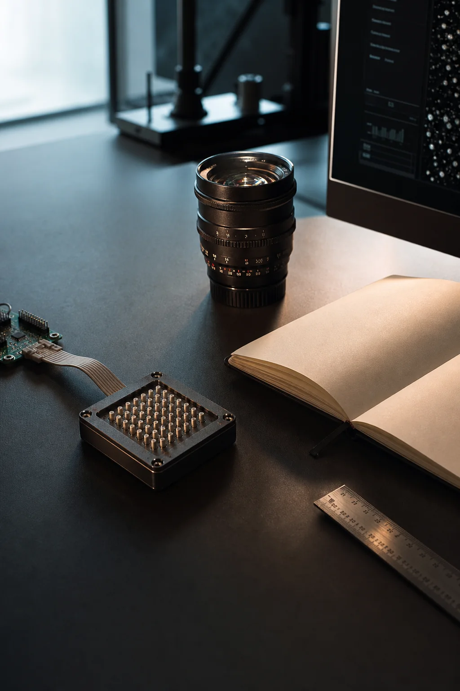
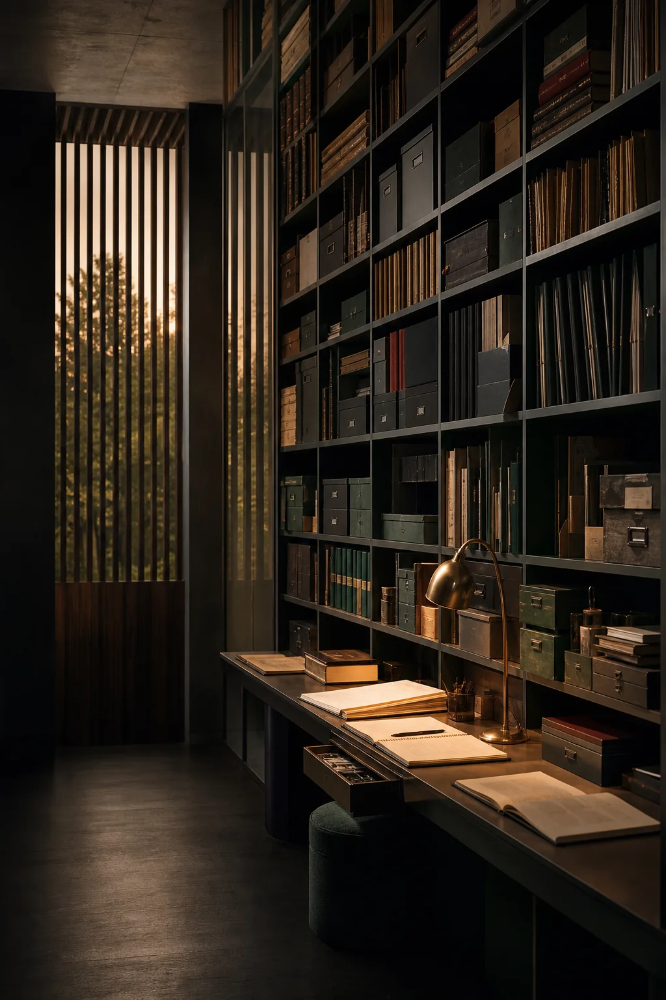
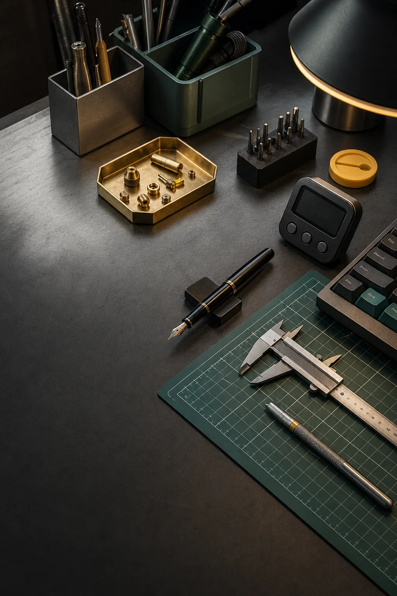
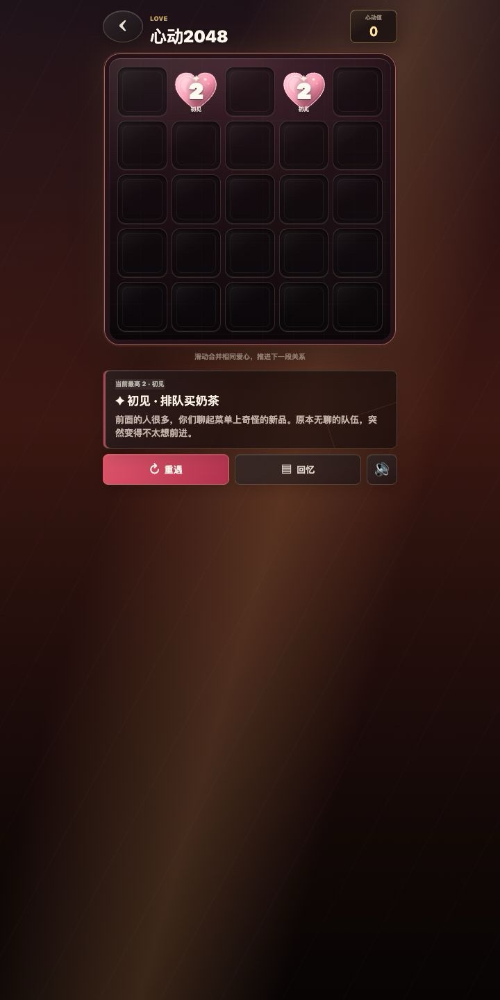
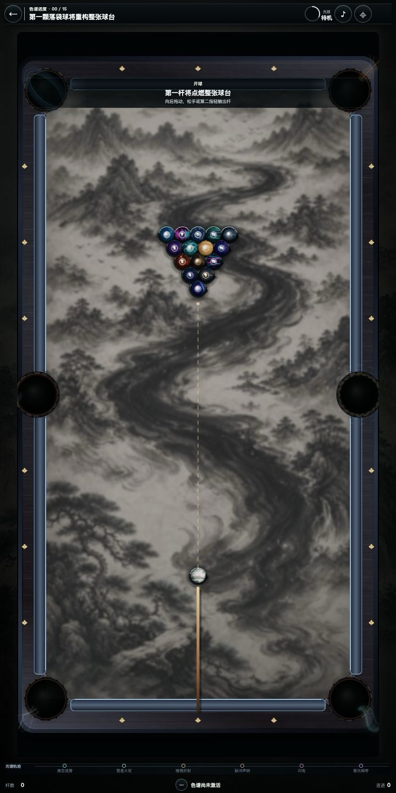

Personal Space · Xi'an
Yong Liu 刘勇
记录研究工作、知识积累与日常创作，也保留一些值得反复游玩的灵感实验。
ResearchNotesToolsPlay

01Academic / Profile Research & Profile 个人主页 从医学影像到智能感知，查看论文、专利、教育经历与研究轨迹。 Explore
02Knowledge / Notes Notes & Maps 个人知识库 从 Obsidian 延伸出的研究方法、阅读笔记与主题地图。 Browse
03Utility / Workshop Everyday Workbench 小工具箱 为写作、计时、换算与整理制作的轻量工具。 Open

01个人主页/ 06
Next个人知识库